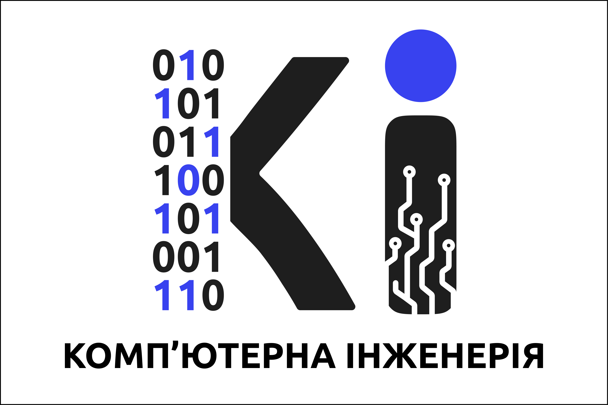

Системне програмування
Електронне академічне портфоліо: тематичні конспекти, звіти з лабораторних робіт, довідники команд та сертифікації.
Системи контролю версій: розподілена архітектура, ключові переваги, таблиця 10 базових команд із коментарями, сертифікат проходження курсу та джерела.
Операційна система GNU/Linux: огляд дистрибутивів, таблиця 10 CLI команд, BASH-скрипт текстової авторизації з інтерактивним емулятором термінала.
Системне програмування на Python: робота з файловою системою, процесами, міжпроцесною взаємодією (IPC) та розробка утиліт автоматизації.
Інформація про портфоліо

| Дисципліна: | Системне програмування - 67 |
| Призначення: | Збереження навчальних матеріалів, лабораторних звітів та підтверджень компетенцій |
| Студент: | Дмитро Самборик 1-КТ-23 |